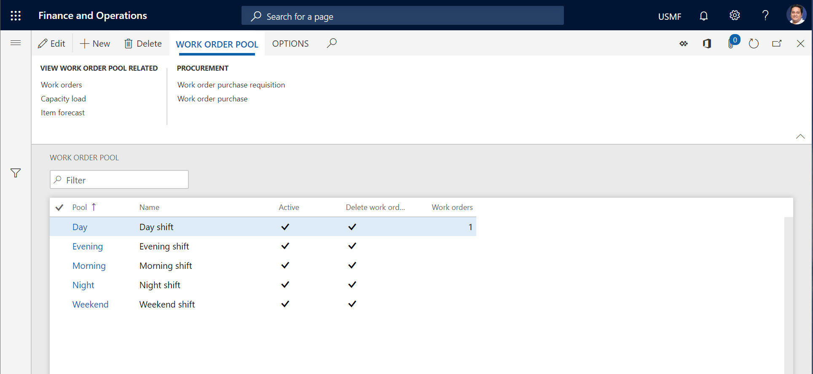

Arbeitsauftragspools
Important
Dynamics 365 for Finance and Operations hat sich zu speziell entwickelten Anwendungen entwickelt, mit denen Sie bestimmte Geschäftsfunktionen verwalten können. Weitere Informationen zu diesen Änderungen finden Sie im Dynamics 365-Lizenzierungshandbuch.
Mit Hilfe von Arbeitsauftragspools können Sie Arbeitsaufträge gruppieren, die etwas gemeinsam haben. Nachfolgend finden Sie einige Beispiele von Elementen, die Sie für Arbeitsauftragspools erstellen können:
Arbeitsteams, z.B. Wartungspersonal A oder Wartungspersonal B
Fachkenntnisse, z.B. Elektriker oder Installateure
Physische Standorte
Zeitpläne, z.B. Wochen oder andere Zeiträume
Bei Bedarf können Sie einen Arbeitsauftrag in mehrere Arbeitsauftragspools einfügen.
Arbeitsauftragspool anlegen
Auf der Listenseite Alle Auftragspools oder Aktive Auftragspools können Sie sich einen Überblick über Ihre Auftragspools verschaffen und neue Pools anlegen.
Wählen Sie Anlagenverwaltung > Allgemein > Arbeitsauftragspools > Alle Auftragspools oder Aktive Auftragspools.
Wählen Sie Neu aus.
Geben Sie im Feld Pool eine Kennung für den Arbeitsauftragspool ein.
Geben Sie im Feld Name einen Namen ein.
Wählen Sie Ja für die Option Aktiv, um anzuzeigen, dass der Arbeitsauftragspool aktiv ist.
Wählen Sie Ja für die Option Arbeitsauftragsbeziehungen löschen, wenn Sie möchten, dass Arbeitsaufträge automatisch aus dem Arbeitsauftragspool entfernt werden.
Wählen Sie im Feld Lebenszykluszustand löschen den Lebenszykluszustand des Arbeitsauftrags aus. So könnte beispielsweise der Lebenszykluszustand des Arbeitsauftrags für die Fertigstellung eines Arbeitsauftrags so eingestellt werden, dass er automatisch Beziehungen zu Arbeitsauftragspools löscht.
Sie können sofort mit dem Hinzufügen von Arbeitsaufträgen zu Ihrem Arbeitsauftragspool beginnen.
Wählen Sie auf dem Inforegister Arbeitsaufträge Zeile hinzufügen.
Wählen Sie einen Arbeitsauftrag im Feld Arbeitsauftrag aus. Die Bezugsfelder werden automatisch aktualisiert.
Wiederholen Sie die Schritte 8 bis 9, um weitere Arbeitsaufträge hinzuzufügen.
Wenn die Arbeitsaufträge, die von Ihnen hinzugefügt zugefügt wurden, in einer bestimmten Reihenfolge erfolgen sollen, können Sie im Feld Sortierreihenfolge die Nummern 1, 2, 3 usw. eingeben, um diese Reihenfolge anzugeben.
Um eine Liste aller Arbeitsaufträge anzuzeigen, die im Arbeitsauftragspool enthalten sind, wählen Sie im Aktivitätsbereich auf dem Inforegister Arbeitsauftragspool in der Gruppe Zugehörigen Arbeitsauftragspool anzeigen Arbeitsaufträge aus, um die Listenseite Alle Arbeitsaufträge zu öffnen.
Um die Kapazitätsauslastung für den Wartungszeitplan, ungeplante und geplante Arbeitsaufträge zu berechnen, wählen Sie im Aktivitätsbereich auf der Registerkarte Arbeitsauftragspool in der Gruppe Zugehörigen Arbeitsauftragspool anzeigen Kapazitätsauslastung aus, um das Dialogfeld Kapazitätsauslastung berechnen zu öffnen.
Um die Prognosen für Artikel (Ersatzteile und andere erforderliche Artikel) zu berechnen, die mit dem Wartungszeitplan, nicht geplanten Arbeitsaufträgen und geplanten Arbeitsaufträgen verbunden sind, wählen Sie im Aktivitätsbereich auf der Registerkarte Arbeitsauftragspool in der Gruppe Zugehörigen Arbeitsauftragspool anzeigen Artikelplanung aus, um das Dialogfeld Artikelprognose berechnen zu öffnen.
Um eine Liste aller Bestellanforderungen anzuzeigen, die mit den Arbeitsaufträgen im Arbeitsauftragspool verbunden sind, wählen Sie im Aktivitätsbereich auf dem Inforegister Arbeitsauftragspool in der Gruppe Beschaffung Arbeitsauftrag – Bestellanforderung aus, um die Listenseite Arbeitsauftrag – Bestellanforderung zu öffnen.
Um eine Liste aller Bestellungen anzuzeigen, die mit den Arbeitsaufträgen im Arbeitsauftragspool verbunden sind, wählen Sie im Aktivitätsbereich auf dem Inforegister Arbeitsauftragspool in der Gruppe Beschaffung Arbeitsauftrag – Einkauf aus, um die Listenseite Arbeitsauftrag – Einkauf zu öffnen.
Note
Wenn ein Arbeitsauftragspool für Ihre Arbeitsvorbereitung nicht mehr relevant ist, setzen Sie die Option Aktiv für diesen Pool in der Listenansicht der Seite Arbeitsauftragspool auf Nein.
Um alle Arbeitsauftragspositionen zu löschen, setzen Sie die Option Arbeitsauftragsbeziehungen löschen auf Ja. Diese Option ist hilfreich, wenn Sie beispielsweise einen leeren Pool erstellen möchten, den Sie für andere Arbeitsaufträge später verwenden können. Denken Sie daran, die Option Arbeitsauftragsbeziehungen löschen auf Nein zu setzen, wenn Sie bereit sind, den Arbeitsauftragspool zum späteren Anlegen neuer Arbeitsauftragsbeziehungen zu verwenden.
In der folgenden Abbildung wird ein Beispiel der Listenseite Arbeitsauftragspool angezeigt.

Arbeitsauftrag zu einem Arbeitsauftragspool hinzufügen
Wie im vorherigen Abschnitt beschrieben, können Sie beim Anlegen des Pools Arbeitsaufträge zu einem Arbeitsauftragspool hinzufügen. Sie können Arbeitsaufträge einem Arbeitsauftragspool auf der Listenseite Alle Arbeitsaufträge oder Aktive Arbeitsaufträge hinzufügen.
Wählen Sie den Arbeitsauftrag aus, und wählen Sie dann im Aktivitätsbereich auf der Registerkarte Arbeitsauftrag in der Gruppe Verwalten Arbeitsauftragspool aus.
Wählen Sie den Arbeitsauftrag in der Liste aus und klicken Sie auf Arbeitsauftragspool.
Im Dialogfeld Arbeitsauftragspool verwalten im Feld Hinzufügen/Entfernen wählen Sie Hinzufügen aus.
Wählen Sie den Arbeitsauftragspool im Feld Pool aus.
Wählen Sie OK.
Um den Arbeitsauftrag zu sperren, den Sie in einer bestimmten Reihenfolge im Arbeitsauftragspool hinzugefügt haben, wählen Sie auf der Listenseite Alle Arbeitsauftragspools oder Aktive Arbeitsauftragspools den Pool aus, und wählen Sie dann Bearbeiten. Verwenden Sie anschließend auf der Seite Arbeitsauftragspool auf dem Inforegister Arbeitsaufträge das Feld Sortierreihenfolge, um die Sortierreihenfolge der Arbeitsaufträge anzupassen, die im Pool enthaltenen sind.
Wenn Sie einen Arbeitsauftrag aus einem Arbeitsauftragspool entfernen möchten, wiederholen Sie diese Schritte, aber wählen in Schritt 3 Entfernen.